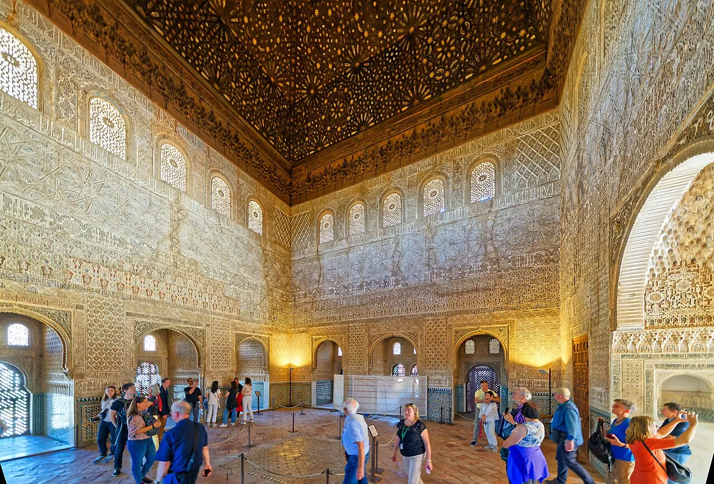
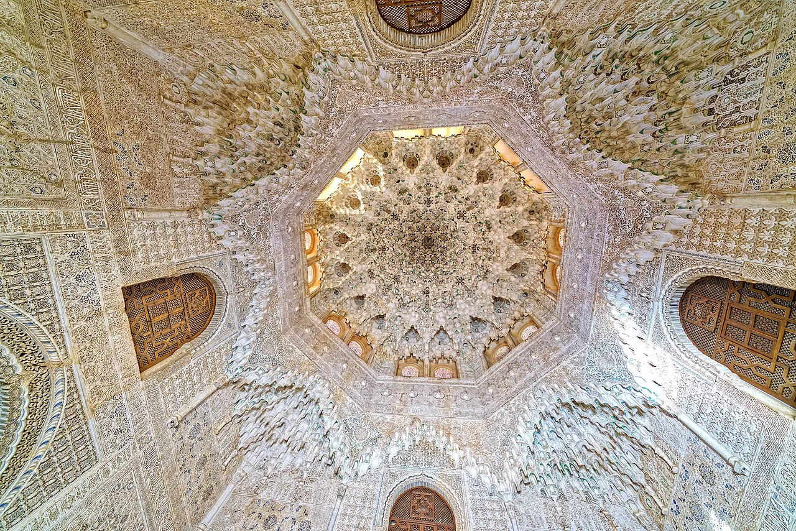
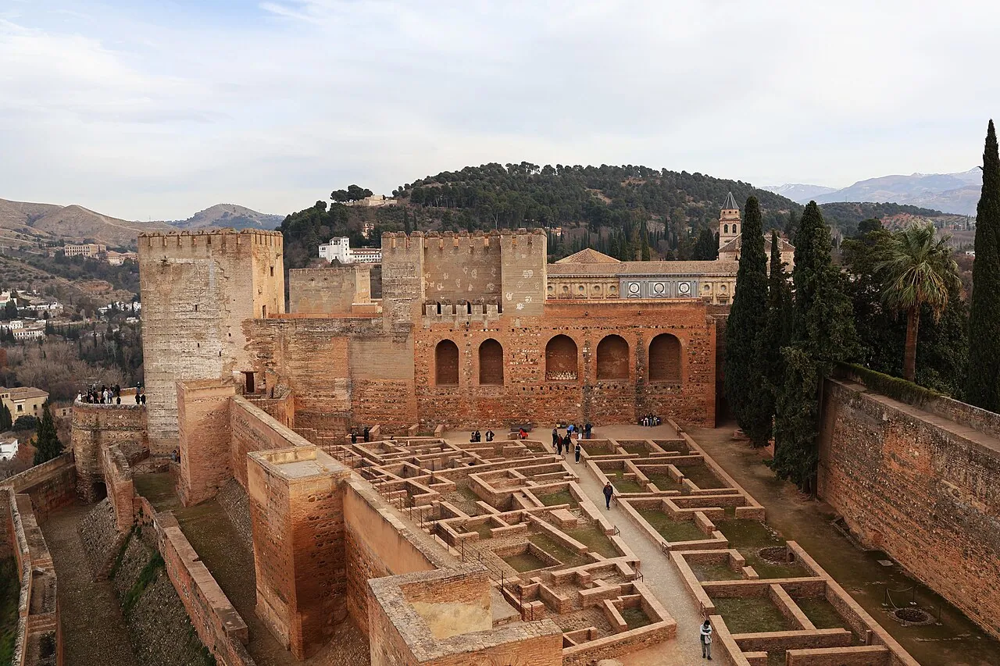

1/8 · Exterior · Tour of the AlhambraPhoto: Holger Uwe Schmitt · CC BY-SA 4.0 · source2/8 · Exterior · Tour of the AlhambraPhoto: Holger Uwe Schmitt · CC BY-SA 4.0 · source3/8 · Interior · Tour of the AlhambraPhoto: Holger Uwe Schmitt · CC BY-SA 4.0 · source

4/8 · Interior · Tour of the AlhambraPhoto: Holger Uwe Schmitt · CC BY-SA 4.0 · source5/8 · Interior · Tour of the AlhambraPhoto: Holger Uwe Schmitt · CC BY-SA 4.0 · source

6/8 · Detail · Tour of the AlhambraPhoto: Holger Uwe Schmitt · CC BY-SA 4.0 · source7/8 · Detail · Tour of the AlhambraPhoto: Holger Uwe Schmitt · CC BY-SA 4.0 · source

8/8 · Context · Barrio Castrense of Alhambra in January 2025, picture taken from Tore de la VelaPhoto: Wikiolo · CC BY 4.0 · source